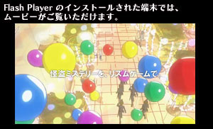

- タイトル
- リズム怪盗R 皇帝ナポレオンの遺産
SEGA THE BEST - 発売日
- 2012年11月22日(木)
- 対応機種
- ニンテンドー3DS
- 価格
- 2,800円(税込2,940円)
- ジャンル
- リズムアクションアドベンチャー
- プレイ人数
- 1～2人
- CERO
- B
更新情報
- 2012年9月3日（月）
- ニンテンドー3DS用ソフト『リズム怪盗R 皇帝ナポレオンの遺産』がお求めやすい価格となって11月22日に発売決定！
- 2012年5月17日（木）
- 「リズム怪盗R × miwa プレミアムイベント」 「リズム怪盗Rバンド」のライブ映像を期間限定公開！
公開期間：5/17(木)～5/31(木) - 2012年3月16日（金）
- リズム怪盗R 皇帝ナポレオンの遺産 オリジナル サウンドトラック iTunes でも配信中！
- 2012年3月15日（木）
- メイキングオブリズム怪盗R 『リズム怪盗Rの挑戦』Part3 ～ゲーム完成編～ ムービー公開！
- 2012年3月8日（木）
- メイキングオブリズム怪盗R 『リズム怪盗Rの挑戦』Part2 ～音楽・ストーリーの追求編～ ムービー公開！
- 2012年3月5日（月）
- 初音ミク×リズム怪盗R ニコニコ動画で生放送決定！
- 2012年3月1日（木）
- メイキングオブリズム怪盗R 『リズム怪盗Rの挑戦』Part1 ～リズムの追求編～ ムービー公開！
- 2012年2月24日（金）
- 締切間近！購入者限定プレミアムイベントの詳細決定！
- 2012年2月23日（木）
- 好きなリズムゲームTwitterキャンペーン
発売記念かべがみ＆Twitterアイコン 第6弾 プレゼント中！ - 2012年2月16日（木）
- 「エンドレスサンバ」でスコアを100以上出して
豪華景品をゲットしようキャンペーン
サントラ発売記念！サウンド感想 Twitterキャンペーン
サウンドトラック発売中！曲目を公開！
発売記念かべがみ＆Twitterアイコン 第5弾 プレゼント中！ - 2012年2月9日（木）
- 「エンドレスキック」でスコアを100以上出して
豪華景品をゲットしようキャンペーン
発売記念かべがみ＆Twitterアイコン 第4弾 プレゼント中！ - 2012年2月3日（金）
- お問い合わせ Q＆Aを掲載！
- 2012年2月2日（木）
- 「エンドレスダンス」でスコアを100以上出して
豪華景品をゲットしようキャンペーン
発売記念かべがみ＆Twitterアイコン 第3弾 プレゼント中！
体験映像 東国原英夫篇 公開！ - 2012年1月26日（木）
- 発売記念かべがみ＆Twitterアイコン 第2弾 プレゼント中！
体験映像 有吉弘行・上島竜兵篇／細谷佳正インタビュー映像 公開！ - 2012年1月20日（金）
- miwaが歌うオープニング楽曲"クレアデルネ"が1/25より先行配信スタート！
- 2012年1月19日（木）
- 感想をつぶやいて、豪華景品をゲットしようキャンペーン
発売記念かべがみ＆Twitterアイコン プレゼント中！
体験映像 榮倉奈々篇、公開！
ゲーム概要にコンテンツ追加！
サウンド試聴コーナーに試聴曲を追加！
【ニュースblog更新】『リズム怪盗R』本日発売！ - 2012年1月16日（月）
- MUSIC ON！ TV にてオンエアが決定！
- 2012年1月13日（金）
- 【ニュースblog更新】TVCM プロモーションキャラクター篇
- 2012年1月12日（木）
-
初めての人でもわかる『リズム怪盗R』
東国原英夫さんが店頭体験会に登場！
TVCM映像、4本公開！
ゲーム概要にコンテンツ追加！
リズムゲームムービーを追加！
サウンド試聴コーナーに試聴曲を追加！ - 2012年1月11日（水）
- 全楽曲を収録したオリジナル・サウンドトラックが発売決定！
- 2012年1月10日（火）
- 【ニュースblog更新】ニッポン放送「ミューコミプラス」
- 2012年1月9日（月）
- 【ニュースblog更新】TOKYO HEADLINE
- 2012年1月7日（土）
- 【ニュースblog更新】TVCM ゲーム映像篇
- 2012年1月5日（木）
-
TVCM ゲーム映像篇公開！
サウンド試聴コーナーに試聴曲を追加！ - 2011年12月30日（金）
- 【ニュースblog更新】3DS体験版
- 2011年12月29日（木）
- 【ニュースblog更新】TVCM提供番組
- 2011年12月28日（水）
-
ストーリー11～15を追加！
ゲーム概要にコンテンツ追加！
キャラクターを追加！
サウンド試聴コーナーに試聴曲を追加！
【ニュースblog更新】体験三昧 - 2011年12月27日（火）
-
ニンテンドーeショップにて 体験版配信！
店頭体験会 全国11ヵ所で開催！
- 2011年12月22日（木）
- 有吉のYouTube大喜利を公開！
TVCM Rとは?篇公開！
【ニュースblog更新】プロモーションキャラクター発表！ - 2011年12月15日（木）
- プロモーション映像公開！
リズムゲームムービーを追加！
サウンド試聴コーナーに試聴曲を追加！ - 2011年12月8日（木）
- 発売記念イベント開催決定！！
miwa／剛力彩芽インタビュー映像公開！
【ニュースblog更新】リズム怪盗R × miwa プレミアムイベント - 2011年12月1日（木）
- WEB体験版 配信開始！
先着購入特典 発表！サウンド試聴コーナーも公開！
【ニュースblog更新】先着購入特典・WEB体験版 - 2011年11月24日（木）
- ムービーを追加！
【ニュースblog更新】企画検討中！ - 2011年11月17日（木）
- 「ジャンプフェスタ2012」に出展決定！
ゲーム概要にコンテンツ追加！
ストーリー7～10を追加！
リズムゲームムービーを追加！
【ニュースblog更新】ジャンプフェスタ2012 - 2011年11月10日（木）
- オープニングムービー公開！
【ニュースblog更新】オープニングムービー - 2011年11月2日（水）
- 【ニュースblog更新】YouTube リズム怪盗Rチャンネル
- 2011年10月27日（木）
- 【ニュースblog更新】おといあわせ
- 2011年10月26日（水）
- 『リズム怪盗R 皇帝ナポレオンの遺産』公式サイト リニューアルオープン！